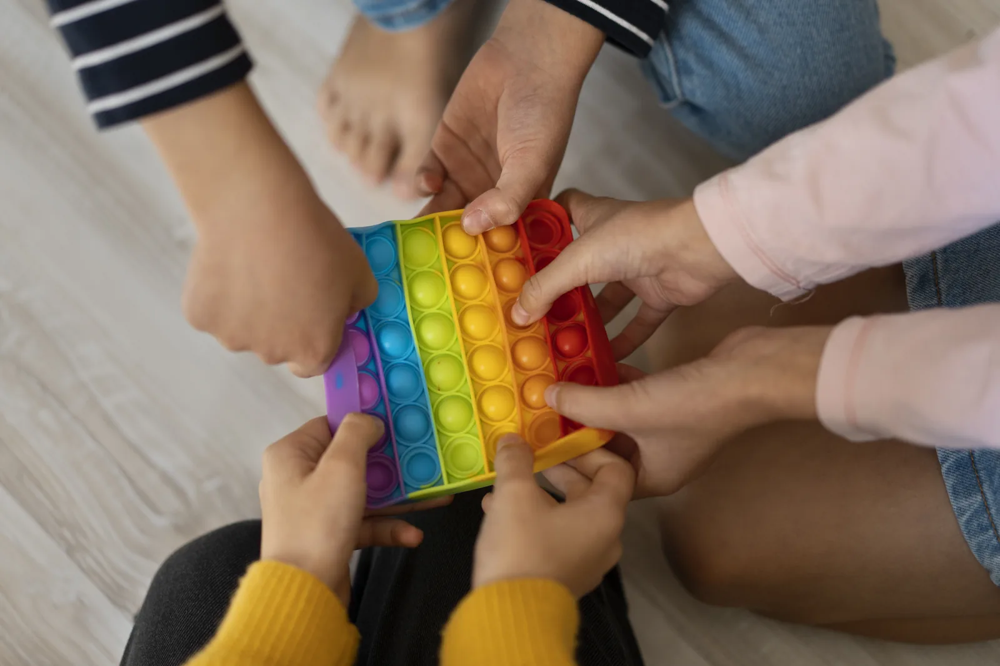

Acolhimento às famílias
Escuta e conexão para quem vive a rotina do cuidado.
A AMABA conecta famílias, informação e oportunidades de cuidado por meio de diferentes frentes de atuação.

Explore os projetos e as atividades publicados pela AMABA. Conheça a proposta de cada iniciativa e acompanhe nossa rede de cuidado.
Saiba como entrar em contatoOs detalhes de cada iniciativa serão adicionados quando estiverem confirmados para divulgação.
Cada iniciativa parte do mesmo compromisso: fortalecer quem cuida e aproximar a comunidade.
Escuta e conexão para quem vive a rotina do cuidado.
Compartilhamento de informações e caminhos de apoio.
Atenção a mães e outras pessoas que acompanham essa jornada.
Encontros que fortalecem vínculos e a comunidade.
Mobilização de recursos para apoiar as ações da associação.
Construção de pontes com profissionais e instituições.
As novidades sobre atividades e eventos serão reunidas na página de notícias.